the main organ of photosynthesis and transpiration in higher plants
4.22
blade
/bleid/
n. 叶片, 刀锋, 刀口, 剑
especially a leaf of grass or the broad portion of a leaf as distinct from the petiole
4.19
lemon
/'lemәn/
n. 柠檬, 柠檬树, 柠檬色
yellow oval fruit with juicy acidic flesh
4.1
pine
/pain/
n. 松树, 松木
a coniferous tree
4.1
olive
/'ɒliv/
n. 橄榄, 橄榄树, 橄榄色, 橄榄枝
small ovoid fruit of the European olive tree; important food and source of oil
4.09
bud
/bʌd/
n. 芽, 花蕾
a partially opened flower
4.08
reed
/ri:d/
n. 芦苇, 芦笛, 簧舌, 纤弱的人
tall woody perennial grasses with hollow slender stems especially of the genera Arundo and Phragmites
4.07
nut
/nʌt/
n. 坚果, 核心, 螺帽
usually large hard-shelled seed
4.04
cannabis
/'kænәbis/
n. 大麻
any plant of the genus Cannabis; a coarse bushy annual with palmate leaves and clusters of small green flowers; yields tough fibers and narcotic drugs
4.03
trunk
/trʌŋk/
n. 树干, 干线, 躯干, 主干, 象鼻, 箱子
the main stem of a tree; usually covered with bark; the bole is usually the part that is commercially useful for lumber
4.03
wheat
/hwi:t/
n. 小麦
annual or biennial grass having erect flower spikes and light brown grains
4.01
banana
/bә'nɑ:nә/
n. 香蕉
any of several tropical and subtropical treelike herbs of the genus Musa having a terminal crown of large entire leaves and usually bearing hanging clusters of elongated fruits
4.0
bean
/bi:n/
n. 豆子
any of various edible seeds of plants of the family Leguminosae used for food
3.98
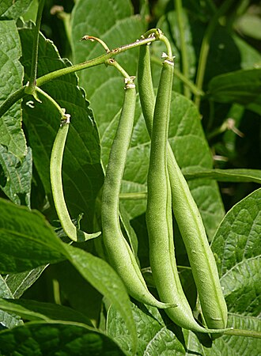
needle
/'ni:dl/
n. 针, 尖
the leaf of a conifer
3.98
berry
/'beri/
n. 浆果
any of numerous small and pulpy edible fruits; used as desserts or in making jams and jellies and preserves
3.97
lily
/'lili/
n. 百合, 百合花
any liliaceous plant of the genus Lilium having showy pendulous flowers
3.95
sweet clover复合词
/swi:t ˈkləʊvə/
草木樨（属）; 草木犀
erect annual or biennial plant grown extensively especially for hay and soil improvement
3.95
vegetable
/'vedʒәtәbl/
n. 蔬菜, 植物, 无精打采之人
edible seeds or roots or stems or leaves or bulbs or tubers or nonsweet fruits of any of numerous herbaceous plant
3.94
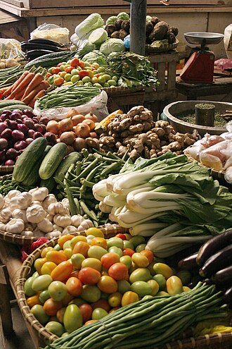
ginger
/'dʒindʒә/
n. 姜, 精力, 姜黄色
perennial plants having thick branching aromatic rhizomes and leafy reedlike stems
3.93
peanut
/'pi:nʌt/
n. 花生, 小人物, 极小的数额
underground pod of the peanut vine
3.9
onion
/'ʌnjәn/
n. 洋葱
the bulb of an onion plant
3.89
holly
/'hɒli/
n. 冬青树
any tree or shrub of the genus Ilex having red berries and shiny evergreen leaves with prickly edges
3.88
greens
n. 绿叶蔬菜
any of various leafy plants or their leaves and stems eaten as vegetables
3.86
tomato
/tә'mɑ:tәu/
n. 番茄, 西红柿
mildly acid red or yellow pulpy fruit eaten as a vegetable
3.85
vanilla
/vә'nilә/
n. 香草, 香子兰
any of numerous climbing plants of the genus Vanilla having fleshy leaves and clusters of large waxy highly fragrant white or green or topaz flowers
3.84
violet
/'vaiәlit/
n. 堇菜, 紫罗兰
any of numerous low-growing violas with small flowers
3.84
buffalo nut复合词
/ˈbʌfələu nʌt/
n. 野牛果; 多油核果
oily drupaceous fruit of rabbitwood
3.79
french fries复合词
/frentʃ fraɪz/
炸薯条
strips of potato fried in deep fat
3.79
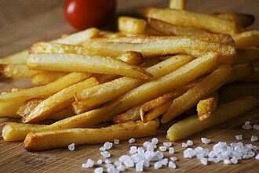
pole bean复合词
/pəul bi:n/
n. 攀缘茎类的豆
a climbing bean plant that will climb a wall or tree or trellis
3.79
screw bean复合词
na. 【植】螺丝豆(树)
spirally twisted sweet pod of screwbean mesquite that is used for fodder or ground into meal for feed
3.79
daisy
/'deizi/
n. 雏菊, 一流人物
any of numerous composite plants having flower heads with well-developed ray flowers usually arranged in a single whorl
3.78
snap bean复合词
/snæp bi:n/
食荚菜豆
tender green beans without strings that easily snap into sections
3.78
woody plant复合词
/ˈwʊdi: plɑ:nt/
木本植物
a plant having hard lignified tissues or woody parts especially stems
3.78
herb
/hә:b/
n. 药草, 香草
a plant lacking a permanent woody stem; many are flowering garden plants or potherbs; some having medicinal properties; some are pests
3.77
nut pine复合词
/nʌt pain/
瑞士五针松
any of several pinons bearing edible nutlike seeds
3.77
pine nut复合词
/pain nʌt/
n. 松仁, 松子
edible seed of any of several nut pines especially some pinons of southwestern North America
3.77
cedar
/'si:dә/
n. 雪松, 香椿
any of numerous trees of the family Cupressaceae that resemble cedars
3.76
heath
/hi:θ/
n. 石南荒原, 低矮灌木
a low evergreen shrub of the family Ericaceae; has small bell-shaped pink or purple flowers
3.76
iris
/'airis/
n. 虹膜, 鸢尾属植物, 虹, 虹彩
plants with sword-shaped leaves and erect stalks bearing bright-colored flowers composed of three petals and three drooping sepals
3.76
pitcher plant复合词
/ˈpɪtʃə plɑ:nt/
n. 猪笼草, 捕虫草
any of several insectivorous herbs of the order Sarraceniales
3.76
water mold复合词
/ˈwɔ:tə məuld/
水霉
parasitic or saprobic organisms living chiefly in fresh water or moist soil
3.76
coral root复合词
/'kɒrəlruːt/
n. 珊瑚兰属植物
a wildflower of the genus Corallorhiza growing from a hard mass of rhizomes associated with a fungus that aids in absorbing nutrients from the forest floor
3.75
corn lily复合词
/kɔ:n ˈlɪli/
[植物]黄七筋菇
any of several South African plants of the genus Ixia having grasslike leaves and clusters of showy variously colored lily-like flowers; widely cultivated
3.75
monkey nut复合词
/ˈmʌŋki nʌt/
n. 落花生
pod of the peanut vine containing usually 2 nuts or seeds; `groundnut' and `monkey nut' are British terms
3.75
cereal
/'siәriәl/
n. 谷类食品, 谷类植物
grass whose starchy grains are used as food: wheat; rice; rye; oats; maize; buckwheat; millet
3.74
cedar tree复合词
/ˈsi:də tri:/
雪松
any of numerous trees of the family Cupressaceae that resemble cedars
3.73
vine
/vain/
n. 藤本植物, 葡萄, 藤, 蔓
a plant with a weak stem that derives support from climbing, twining, or creeping along a surface
3.73
white rust复合词
/hwait rʌst/
白锈, 白锈病
fungus causing a disease characterized by a white powdery mass of conidia
3.73
crab apple复合词
/kræb ˈæpl/
n. 山楂子
any of numerous varieties of crab apples cultivated for their small acidic (usually bright red) fruit used for preserves or as ornamentals for their blossoms
3.72
pumpkin seed复合词
[化] 南瓜子；[医] 南瓜子, 西葫芦子
the edible seed of a pumpkin
3.72
strawberry
/'strɒ:bәri/
n. 草莓
sweet fleshy red fruit
3.72
sugar cane复合词
甘蔗
juicy canes whose sap is a source of molasses and commercial sugar; fresh canes are sometimes chewed for the juice
3.71
baked potato复合词
/beɪkt pəˈteitəu/
（带皮）烤土豆
potato that has been cooked by baking it in an oven
3.7
grape
/greip/
n. 葡萄, 葡萄树
any of various juicy fruit of the genus Vitis with green or purple skins; grow in clusters
3.7
kidney bean复合词
菜豆,四季豆
the common bean plant grown for the beans rather than the pods (especially a variety with large red kidney-shaped beans)
3.7
mustard
/'mʌstәd/
n. 芥末, 芥菜, 强烈的兴趣
any of several cruciferous plants of the genus Brassica
3.69
stigma
/'stigmә/
n. 耻辱, 污名, 烙印
the apical end of the style where deposited pollen enters the pistil
3.69
wheat berry复合词
/hwi:t ˈberi:/
小麦粒的粉质胚乳
a grain of wheat
3.69
willow
/'wilәu/
n. 柳树, 柳木制品
any of numerous deciduous trees and shrubs of the genus Salix
3.69
lily pad复合词
/ˈlili pæd/
n. 睡莲叶子
floating leaves of a water lily
3.68
prop root复合词
/prɔp ru:t/
支柱根
a root that grows from and supports the stem above the ground in plants such as mangroves
3.68
sage brush复合词
/seɪdʒ brʌʃ/
[医]北美艾灌丛
any of several North American composite subshrubs of the genera Artemis or Seriphidium
3.68
bulb
/bʌlb/
n. 球茎, 电灯泡
a modified bud consisting of a thickened globular underground stem serving as a reproductive structure
3.66
willow tree复合词
/ˈwiləu tri:/
柳树
any of numerous deciduous trees and shrubs of the genus Salix
3.66
basil
/'bæzil/
n. 罗勒属植物
any of several Old World tropical aromatic annual or perennial herbs of the genus Ocimum
3.65
blackberry
/'brækbәri/
n. 刺, 黑莓
large sweet black or very dark purple edible aggregate fruit of any of various bushes of the genus Rubus
3.65
marsh elder复合词
黄叶柳
any of various coarse shrubby plants of the genus Iva with small greenish flowers; common in moist areas (as coastal salt marshes) of eastern and central North America
3.65
wax bean复合词
/wæks bi:n/
n. 黄荚种菜豆
a common bean plant grown for its edible golden pod
3.65
floral leaf复合词
/ˈflɔ:rəl li:f/
花叶
a modified leaf that is part of a flower
3.64
noble cane复合词
/ˈnəubl kein/
热带种
sugarcanes representing the highest development of the species; characterized by large juicy stalks with soft rinds and high sugar content
3.64
ivory nut复合词
/ˈaivəri nʌt/
n. 象牙棕榈之果实
nutlike seed of a South American palm; the hard white shell takes a high polish and is used for e.g. buttons
3.63
laurel
/'lɒ:rәl/
n. 月桂树, 荣誉
any of various aromatic trees of the laurel family
3.63
mushroom
/'mʌʃrum/
n. 蘑菇形物, 蘑菇, 暴发户
common name for an edible agaric (contrasting with the inedible toadstool)
3.63
soy
/sɒi/
n. 酱油, 大豆
a source of oil; used for forage and soil improvement and as food
3.63
squash
/skwɒʃ/
n. 挤压, 压碎的东西, 南瓜属植物, 拥挤的人群
any of numerous annual trailing plants of the genus Cucurbita grown for their fleshy edible fruits
3.63
aquatic
/ә'kwætik/
n. 水生动物, 水生植物
a plant that lives in or on water
3.62
blossom
/'blɒsәm/
n. 花, 花开的状态, 兴旺期
reproductive organ of angiosperm plants especially one having showy or colorful parts
3.62
carrot
/'kærәt/
n. 胡萝卜
deep orange edible root of the cultivated carrot plant
3.62
bamboo shoot复合词
笋, 竹笋
edible young shoots of bamboo
3.61
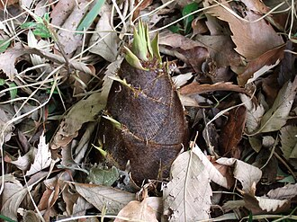
jasmine
/'dʒæsmin/
n. 茉莉, 淡黄色
any of several shrubs and vines of the genus Jasminum chiefly native to Asia
3.61
scrub oak复合词
/skrʌb əuk/
胭脂栎
any of various chiefly American small shrubby oaks often a dominant form on thin dry soils sometimes forming dense thickets
3.61
winter squash复合词
/ˈwintə skwɔʃ/
笋瓜
any of various plants of the species Cucurbita maxima and Cucurbita moschata producing squashes that have hard rinds and mature in the fall
3.61
aquatic plant复合词
水生植物
a plant that grows partly or wholly in water whether rooted in the mud, as a lotus, or floating without anchorage, as the water hyacinth
3.6
magic mushroom复合词
/ˈmædʒik ˈmʌʃrum/
n. （食用后会产生幻觉的）神奇蘑菇, 致幻蘑菇
the button-shaped top of the mescal cactus; a source of psilocybin
3.6
prairie rocket复合词
/ˈprɛəri ˈrɔkit/
草原桂竹香
any of several North American plants of the genus Erysimum having large yellow flowers
3.6
universal veil复合词
/ˌju:niˈvə:səl veil/
总包蘑菇的包膜
membrane initially completely investing the young sporophore of various mushrooms that is ruptured by growth; represented in the mature mushroom by a volva around lower part of stem and scales on upper surface of the cap
3.6
pepper vine复合词
/ˈpepə vaɪn/
胡椒
any of various shrubby vines of the genus Piper
3.59
poppy
/'pɒpi/
n. 罂粟
annual or biennial or perennial herbs having showy flowers
3.59
vegetable ivory复合词
/ˈvedʒitəbl ˈaivəri/
植物象牙
nutlike seed of a South American palm; the hard white shell takes a high polish and is used for e.g. buttons
3.59
accessory fruit复合词
/ækˈsesəri fru:t/
附果, 假果
fruit containing much fleshy tissue besides that of the ripened ovary; as apple or strawberry
3.58
cedar nut复合词
/ˈsi:də nʌt/
雪松果，松子
the seed of the Swiss pine
3.58
citrus
/'sitrәs/
n. 柑橘属果树
any of numerous fruits of the genus Citrus having thick rind and juicy pulp; grown in warm regions
3.58
cultivated plant复合词
/ˈkʌltəˌveɪtɪd plɑ:nt/
栽培植物，罪
plants that are grown for their produce
3.58
feather palm复合词
/ˈfeðə pɑ:m/
羽叶棕榈
palm having pinnate or featherlike leaves
3.58
kernel
/'kә:nl/
n. 核心, 中心, 精髓, 内核
the inner and usually edible part of a seed or grain or nut or fruit stone
3.58
walnut tree复合词
/ˈwɔ:lnət tri:/
核桃树胡桃树
any of various trees of the genus Juglans
3.58
meadow beauty复合词
/ˈmedəu ˈbju:ti/
瑞克希阿属植物
any of several plants of the genus Rhexia usually having pink-purple to magenta flowers; eastern North America
3.57
cola nut复合词
[医] 柯拉子
bitter brown seed containing caffein; source of cola extract
3.56
erica
/'erikә/
n. 欧石南属植物
any plant of the genus Erica
3.56
flooded gum复合词
un. 野安树
any of several Australian gum trees growing on moist or alluvial soil
3.56
milo
/'mailәj, 'mi:lɔ:/
n. [植]蜀黍；麦洛（公元前6世纪的希腊摔跤能手）
small drought-resistant sorghums having large yellow or whitish grains
3.56
walnut
/'wɒ:lnәt/
n. 胡桃
nut of any of various walnut trees having a wrinkled two-lobed seed with a hard shell
3.56
cabbage
/'kæbidʒ/
n. 卷心菜
any of various types of cabbage
3.55
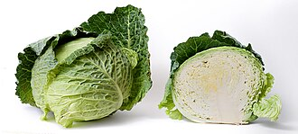
plum
/plʌm/
n. 李子
any of several trees producing edible oval fruit having a smooth skin and a single hard stone
3.55
poisonous plant复合词
/ˈpɔizənəs plɑ:nt/
有毒植物
a plant that when touched or ingested in sufficient quantity can be harmful or fatal to an organism
3.55
citrus fruit复合词
/ˈsɪtrəs fru:t/
n. 柑橘类的水果
any of numerous fruits of the genus Citrus having thick rind and juicy pulp; grown in warm regions
3.54
partial veil复合词
/ˈpɑ:ʃəl veil/
不完全菌幕，绿膜
membrane of the young sporophore of various mushrooms extending from the margin of the cap to the stem and is ruptured by growth; represented in mature mushroom by an annulus around the stem and sometimes a cortina on the margin of the cap
3.54
pea
/pi:/
n. 豌豆, 似豌豆的东西
seed of a pea plant used for food
3.54
red cabbage复合词
/red ˈkæbidʒ/
红球甘蓝
cabbage plant with a compact head of reddish purple leaves
3.54
sacred mushroom复合词
【植物】(生长于墨西哥的)圣菌, 墨西哥裸盖菇
the button-shaped top of the mescal cactus; a source of psilocybin
3.54
viola
/'vaiәlә/
n. 中提琴
any of the numerous plants of the genus Viola
3.54
field pea复合词
/fi:ld pi:/
紫花豌豆
seed of the field pea plant
3.53
fungus
/'fʌŋgәs/
n. 真菌, 真菌类植物
an organism of the kingdom Fungi lacking chlorophyll and feeding on organic matter; ranging from unicellular or multicellular organisms to spore-bearing syncytia
3.53
green pea复合词
/ɡri:n pi:/
嫩豌豆
fresh pea
3.53
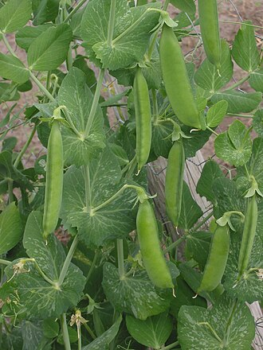
plum tree复合词
/plʌm tri:/
李树
any of several trees producing edible oval fruit having a smooth skin and a single hard stone
3.53
bing cherry复合词
樱桃
dark red or blackish sweet cherry
3.52
club fungus复合词
/klʌb ˈfʌŋɡəs/
[医]珊瑚菌
a club-shaped coral fungus
3.52
ming tree复合词
明树
an artificial plant resembling a bonsai
3.52
oyster plant复合词
/ˈɔistə plɑ:nt/
n. <美>婆罗门参（蔬菜的一种）
edible root of the salsify plant
3.52
pea tree复合词
/pi: tri:/
锦鸡儿
any plant of the genus Caragana having even-pinnate leaves and mostly yellow flowers followed by seeds in a linear pod
3.52
rye
/rai/
n. 黑麦, 吉卜赛绅士
the seed of the cereal grass
3.52
true fungus复合词
/tru: ˈfʌŋɡəs/
真菌
any of numerous fungi of the division Eumycota
3.52
wild pea复合词
/waild pi:/
野豌豆，巢菜
any of various plants of the family Leguminosae that usually grow like vines
3.52
almond tree复合词
/ˈɑ:mənd tri:/
扁桃
any of several small bushy trees having pink or white blossoms and usually bearing nuts
3.51
floral envelope复合词
/ˈflɔ:rəl ˈenvələup/
花被
collective term for the outer parts of a flower consisting of the calyx and corolla and enclosing the stamens and pistils
3.51
flowering plant复合词
/ˈflaʊərɪŋ plɑ:nt/
有花植物
plants having seeds in a closed ovary
3.51
flowering tree复合词
/ˈflaʊərɪŋ tri:/
观花树木
any tree having seeds and ovules contained in the ovary
3.51
garden pea复合词
/ˈɡɑ:dn pi:/
豌豆，青豆; 菜豌豆
the flattened to cylindric inflated multi-seeded fruit of the common pea plant
3.51
snow pea复合词
/snəu piː/
n. 糖荚豌豆
variety of pea plant producing peas having thin flat edible pods
3.51
sugar pea复合词
/ˈʃuɡə pi:/
糖荚豌豆
variety of pea plant producing peas having thin flat edible pods
3.51
raspberry
/'ræzbәri/
n. 悬钩子, 呸声
woody brambles bearing usually red but sometimes black or yellow fruits that separate from the receptacle when ripe and are rounder and smaller than blackberries
3.5
wild rye复合词
[植物]野麦属（Elymus）植物(产于北美)
any of several grasses of the genus Elymus
3.5
arbor
/'ɑ:bә/
n. 藤架, 树, 心轴, 凉亭
tree (as opposed to shrub)
3.49
palm kernel复合词
/pɑ:m ˈkɜ:nəl/
棕仁
seed of any oil palm
3.49
red raspberry复合词
/red ˈræzˌberi:/
覆盆子
any of several raspberries bearing red fruit
3.49
unicorn root复合词
[医] 北美肺筋草[根]
any of several perennials of the genus Aletris having grasslike leaves and bitter roots reputed to cure colic
3.49
vascular plant复合词
/ˈvæskjələ plɑ:nt/
维管植物
green plant having a vascular system: ferns, gymnosperms, angiosperms
3.49
birch-tree复合词
桦树
any betulaceous tree or shrub of the genus Betula having a thin peeling bark
3.48
cocoa bean复合词
[化] 可可豆；[医] 可可豆
seed of the cacao tree; ground roasted beans are source of chocolate
3.48
fairy lantern复合词
/ˈfɛəri ˈlæntən/
美草
any of several plants of the genus Calochortus having egg-shaped flowers
3.48
glory pea复合词
un. 耀华豆
any of various shrubs or vines of the genus Clianthus having compound leaves and pea-like red flowers in drooping racemes
3.48
vascular ray复合词
/ˈvæskjələ rei/
维管射线
a sheet of vascular tissue separating the vascular bundles
3.48
pear
/pєә/
n. 梨子, 梨树, 梨木
sweet juicy gritty-textured fruit available in many varieties
3.47
pollen
/'pɒlәn/
n. 花粉
the fine spores that contain male gametes and that are borne by an anther in a flowering plant
3.47
fir tree复合词
/fɜ: tri:/
枞树, 杉树
any of various evergreen trees of the genus Abies; chiefly of upland areas
3.46
rye grass复合词
/raɪ ɡrɑ:s/
黑麦草
any of several annual or perennial Eurasian grasses
3.46
silver fir复合词
/ˈsilvə fɜ:/
银枞, 白枞
any of various true firs having leaves white or silvery white beneath
3.46
thorn apple复合词
[医] 曼陀罗
any of several plants of the genus Datura
3.46
water chestnut复合词
[医] 荸荠
a plant of the genus Trapa bearing spiny four-pronged edible nutlike fruits
3.46
avocado
/.ævәu'kɑ:dou/
n. 鳄梨, 鳄梨树
a pear-shaped tropical fruit with green or blackish skin and rich yellowish pulp enclosing a single large seed
3.45
joint fir复合词
[医] 麻黄
jointed and nearly leafless desert shrub having reduced scalelike leaves and reddish fleshy seeds
3.45
stump
/stʌmp/
n. 残株, 树桩, 烟蒂, 讲演台
the base part of a tree that remains standing after the tree has been felled
3.45
vascular tissue复合词
/ˈvæskjələ ˈtisju:/
维管组织
tissue that conducts water and nutrients through the plant body in higher plants
3.45
chestnut tree复合词
/ˈtʃesˌnʌt tri:/
栗树
any of several attractive deciduous trees yellow-brown in autumn; yield a hard wood and edible nuts in a prickly bur
3.44
everlasting兼类词
/.evә'læstiŋ/
n. 上帝, 神
any of various plants of various genera of the family Compositae having flowers that can be dried without loss of form or color
3.44
flowering cherry复合词
【植物】(日本)樱花树
any of several shrubs or trees of the genus Prunus cultivated for their showy white or pink single or double blossoms
3.44
lavender
/'lævindә/
n. 熏衣草, 淡紫色
any of various Old World aromatic shrubs or subshrubs with usually mauve or blue flowers; widely cultivated
3.44
witch hazel复合词
/witʃ ˈheɪzəl/
北美金缕梅
any of several shrubs or trees of the genus Hamamelis; bark yields an astringent lotion
3.44
aspen
/'æspәn/
n. 山杨
any of several trees of the genus Populus having leaves on flattened stalks so that they flutter in the lightest wind
3.43
darling pea复合词
[医]苦马豆属
either of two Australian plants of the genus Swainsona that are poisonous to sheep
3.43
sea lavender复合词
/si: ˈlævəndə/
勿忘我
any of various plants of the genus Limonium of temperate salt marshes having spikes of white or mauve flowers
3.43
tree stump复合词
/tri: stʌmp/
树墩，树桩; 树根
the base part of a tree that remains standing after the tree has been felled
3.43
medic
/'medik/
n. 苜蓿属植物, 医师, 医科学生
any of several Old World herbs of the genus Medicago having small flowers and trifoliate compound leaves
3.42
pollen tube复合词
/ˈpɔlən tju:b/
花粉管
(botany) a slender tubular outgrowth from a pollen grain when deposited on the stigma for a flower; it penetrates the style and conveys the male gametes to the ovule
any of various plants of various genera of the family Compositae having flowers that can be dried without loss of form or color
3.4
pea bean复合词
/pi: bi:n/
菜豆
white-seeded bean; usually dried
3.4
thrift
/θrift/
n. 节约, 茂盛, 海石竹
any of numerous sun-loving low-growing evergreens of the genus Armeria having round heads of pink or white flowers
3.4
bedding plant复合词
/ˈbedɪŋ plɑ:nt/
n. 地貌面, 层面
an ornamental plant suitable for planting in a flowerbed
3.39
corn stalk复合词
[建] 玉米杆
the stalk of a corn plant
3.39
vegetable marrow复合词
/ˈvedʒitəbl ˈmærəʊ/
n. 西葫芦
any of various squash plants grown for their elongated fruit with smooth dark green skin and whitish flesh
3.39
plum tomato复合词
/plʌm təˈmɑ:təu/
n. 李形番茄；蛋形番茄
an Italian variety of cherry tomato that is shaped like a plum
3.37
vascular bundle复合词
[医] 维管束
a unit strand of the vascular system in stems and leaves of higher plants consisting essentially of xylem and phloem
3.37
bracket fungus复合词
/ˈbrækit ˈfʌŋɡəs/
檐状菌, 多孔菌
a woody fungus that forms shelflike sporophores on tree trunks and wood structures
3.36
clover
/'klәuvә/
n. 红花草
a plant of the genus Trifolium
3.36
coral fungus复合词
[医]朱红真菌属
any of numerous fungi of the family Clavariaceae often brightly colored that grow in often intricately branched clusters like coral
3.36
elm
/elm/
n. 榆树
any of various trees of the genus Ulmus: important timber or shade trees
3.36
flowering maple复合词
/ˈflaʊərɪŋ ˈmeipl/
花苘麻
an ornamental plant of the genus Abutilon having leaves that resemble maple leaves
3.36
sunflower
/'sʌnflauә/
n. 向日葵
any plant of the genus Helianthus having large flower heads with dark disk florets and showy yellow rays
3.36
elm tree复合词
/elm tri:/
n. 榆, 榆树
any of various trees of the genus Ulmus: important timber or shade trees
3.35
ordeal bean复合词
[医] 毒扁豆
dark brown highly poisonous seed of the calabar-bean vine; source of physostigmine and used in native witchcraft
3.35
embryo
/'embriәu/
n. 胚胎, 胎儿, 胚芽
(botany) a minute rudimentary plant contained within a seed or an archegonium
3.34
honey gland复合词
/ˈhʌni ɡlænd/
蜜槽，蜜腺
a gland (often a protuberance or depression) that secretes nectar
3.34
ornamental
/.ɒ:nә'mentl/
n. 装饰物, 观赏植物
any plant grown for its beauty or ornamental value
3.34
spaghetti squash复合词
/spəˈɡeti skwɔʃ/
西葫芦
squash plant bearing oval fruit with smooth yellowish skin and tender stranded flesh resembling spaghetti
3.34
barrel cactus复合词
桶形仙人掌
a cactus of the genus Ferocactus: unbranched barrel-shaped cactus having deep ribs with numerous spines and usually large funnel-shaped flowers followed by dry fruits
3.33
bog plant复合词
/bɔɡ plɑ:nt/
沼泽植物
a semiaquatic plant that grows in soft wet land; most are monocots: sedge, sphagnum, grasses, cattails, etc; possibly heath
3.33
bush clover复合词
/buʃ ˈkləʊvə/
胡枝子属
shrubby or herbaceous plants widely used for forage, soil improvement, and especially hay in southern United States
3.33
gemma
/'dʒemә/
n. 芽, 无性芽, 芽体
small asexual reproductive structure in e.g. liverworts and mosses that detaches from the parent and develops into a new individual
3.33
jelly fungus复合词
/ˈdʒeli: ˈfʌŋɡəs/
胶质菌，木耳
any fungus of the order Tremellales or Auriculariales whose fruiting body is jellylike in consistency when fresh
3.33
apple tree复合词
/ˈæpl tri:/
苹果树
any tree of the genus Malus especially those bearing firm rounded edible fruits
3.32
fir cone复合词
冷杉球果
the seed-producing cone of a fir tree
3.32
melon
/'melәn/
n. 瓜, 甜瓜, 红利, 赃物
any of numerous fruits of the gourd family having a hard rind and sweet juicy flesh
3.32
rainbow cactus复合词
/ˈreinbəu ˈkæktəs/
坚硬鹿角掌
a stout cylindrical cactus of the southwest United States and adjacent Mexico
3.32
sunflower seed复合词
/ˈsʌnˌflauə si:d/
[医]向日葵子
edible seed of sunflowers; used as food and poultry feed and as a source of oil
3.32
mashed potato复合词
洋芋泥
potato that has been peeled and boiled and then mashed
3.31
blueberry
/'blu:bәri/
n. 乌饭树
any of numerous shrubs of the genus Vaccinium bearing blueberries
3.3
orchid
/'ɒ:kid/
n. 兰花, 淡紫色
any of numerous plants of the orchid family usually having flowers of unusual shapes and beautiful colors
3.3
veg
/vedʒ/
n. 蔬菜
edible seeds or roots or stems or leaves or bulbs or tubers or nonsweet fruits of any of numerous herbaceous plant
3.3
wild indigo复合词
[美国英语]【植物】 = baptisia
any of several plants of the genus Baptisia
3.3
chilli
/'tʃili/
n. 红辣椒
very hot and finely tapering pepper of special pungency
3.29
false indigo复合词
un. 假木兰
any of several plants of the genus Baptisia
3.29
fly orchid复合词
/flai ˈɔ:kɪd/
蝇兰
any of several dwarf creeping orchids with small bizarre insect-like hairy flowers on slender stalks
3.29
sac fungus复合词
/sæk ˈfʌŋɡəs/
子囊菌
any of various ascomycetous fungi in which the spores are formed in a sac or ascus
3.29
vascular strand复合词
/ˈvæskjələ strænd/
维管束
a unit strand of the vascular system in stems and leaves of higher plants consisting essentially of xylem and phloem
3.29
gill fungus复合词
[植物]伞菌，蘑菇
a basidiomycete with gills
3.28
marrow squash复合词
/ˈmærəʊ skwɔʃ/
西葫芦，食用葫芦
any of various squash plants grown for their elongated fruit with smooth dark green skin and whitish flesh
3.28
meadow rue复合词
/ˈmedəu ru:/
唐松草, 异株唐松草
any of various herbs of the genus Thalictrum; sometimes rhizomatous or tuberous perennials found in damp shady places and meadows or stream banks; have lacy foliage and clouds of small purple or yellow flowers
3.28
tree trunk复合词
/tri: trʌŋk/
n. 树干
the main stem of a tree; usually covered with bark; the bole is usually the part that is commercially useful for lumber
3.28
beech
/bi:tʃ/
n. 山毛榉
any of several large deciduous trees with rounded spreading crowns and smooth grey bark and small sweet edible triangular nuts enclosed in burs; north temperate regions
3.27
fern
/fә:n/
n. 蕨类植物
any of numerous flowerless and seedless vascular plants having true roots from a rhizome and fronds that uncurl upward; reproduce by spores
3.27
hard fern复合词
【植物】；乌毛蕨属(Lomaria)植物
any of several ferns of the genus Blechnum
3.27
water fern复合词
un. 满江红
ferns that grow in water
3.27
beech tree复合词
山毛榉树
any of several large deciduous trees with rounded spreading crowns and smooth grey bark and small sweet edible triangular nuts enclosed in burs; north temperate regions
3.26
daphne
/'dæfni/
n. [植]瑞香；达芙妮（女名）
any of several ornamental shrubs with shiny mostly evergreen leaves and clusters of small bell-shaped flowers
3.26
tree fern复合词
/tri: fɜ:n/
n. 椤（产于热带）
any of numerous usually tropical ferns having a thick woody stem or caudex and a crown of large fronds; found especially in Australia and New Zealand; chiefly of the families Cyatheaceae and Marattiaceae but some from Polypodiaceae
3.26
veggie
/'vedʒi/
n. 素食者
edible seeds or roots or stems or leaves or bulbs or tubers or nonsweet fruits of any of numerous herbaceous plant
3.26
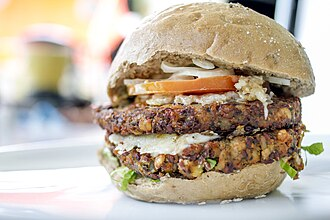
wild parsley复合词
[植物]野欧芹
any of various uncultivated umbelliferous plants with foliage resembling that of carrots or parsley
3.26
wood fern复合词
/wud fɜ:n/
[植物]鳞毛蕨属蕨类
any of various ferns of the genus Dryopteris
3.26
biennial
/bai'eniәl/
n. 两年生植物, 两年一次的事
(botany) a plant having a life cycle that normally takes two seasons from germination to death to complete; flowering biennials usually bloom and fruit in the second season
3.25
chain fern复合词
/tʃein fɜ:n/
[医]狗脊
a fern of the genus Woodwardia having the sori in chainlike rows
3.25
spider orchid复合词
[植物]蜘蛛兰属（Ophrys）植物
any of several European orchids of the genus Ophrys
3.25
black olive复合词
/blæk ˈɔliv/
鸟榄
olives picked ripe and cured in brine then dried or pickled or preserved canned or in oil
3.24
fern seed复合词
[植物学]蕨孢子
the asexual spore of ferns that resembles dust; once thought to be seeds and to make the possessor invisible
3.24
fig tree复合词
无花果树
any moraceous tree of the tropical genus Ficus; produces a closed pear-shaped receptacle that becomes fleshy and edible when mature
3.24
fruit tree复合词
果树
tree bearing edible fruit
3.24
green bean复合词
/ɡri:n bi:n/
n. 青刀豆, 四季豆
immature bean pod eaten as a vegetable
3.24
live oak复合词
/liv əuk/
n. 槲树, 槲树类树木
any of several American evergreen oaks
3.24
morning glory复合词
/ˈmɔ:niŋ ˈɡlɔ:ri/
n. 牵牛花, 昙花一现的人（或事物）
any of various twining vines having funnel-shaped flowers that close late in the day
3.24
plant tissue复合词
/plɑ:nt ˈtisju:/
植物（性）组织
the tissue of a plant
3.24
seed fern复合词
/si:d fɜ:n/
<古>种子蕨
an extinct seed-producing fernlike plant of the order Cycadofilicales (or group Pteridospermae)
3.24
sweet orange复合词
/swi:t ˈɔrindʒ/
甜橙
orange with sweet juicy pulp; often has a thin skin
3.24
sword fern复合词
/sɔ:d fɜ:n/
肾蕨
any of several tropical ferns having more or less sword-shaped fronds including one from which the Boston fern developed
3.24
thistle
/'θisl/
n. 蓟
any of numerous plants of the family Compositae and especially of the genera Carduus and Cirsium and Onopordum having prickly-edged leaves
3.24
tree branch复合词
[计] 树枝, 树叉
any of the main branches arising from the trunk or a bough of a tree
3.24
wax myrtle复合词
/wæks ˈmə:tl/
n. 杨梅属之植物
any shrub or small tree of the genus Myrica with aromatic foliage and small wax-coated berries
3.24
yellow pine复合词
/ˈjeləu pain/
n. 黄松, 黄松木; 短叶松
any of various pines having yellow wood
3.24
hawthorn
/'hɒ:θɒ:n/
n. 山楂
a spring-flowering shrub or small tree of the genus Crataegus
3.23
pollard
/'pɒlәd/
n. 无角(截去角)的动物, 截去树梢的树, 麸皮
a tree with limbs cut back to promote a more bushy growth of foliage
3.23
slime mold复合词
/slaɪm məuld/
n. 黏液菌
a naked mass of protoplasm having characteristics of both plants and animals; sometimes classified as protoctists
3.23
milk thistle复合词
奶蓟草
any of several Old World coarse prickly-leaved shrubs and subshrubs having milky juice and yellow flowers; widely naturalized; often noxious weeds in cultivated soil
3.22
butterfly orchid复合词
蝴蝶兰（花名）
any orchid of the genus Psychopsis: spectacular large tiger-striped orchids
3.21
climbing fern复合词
/ˈklaimiŋ fɜ:n/
海金沙
any of several ferns of the genus Lygodium that climb by twining
3.21
leafy vegetable复合词
叶用蔬菜; 叶菜
any of various leafy plants or their leaves and stems eaten as vegetables
3.21
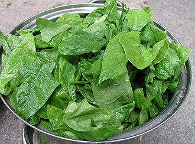
renal cortex复合词
/ˈri:nəl ˈkɔː(r)teks/
肾脏外皮
the cortex of the kidney containing the glomeruli and the convoluted tubules
3.21
aggregate fruit复合词
/ˈæɡriɡit fru:t/
聚合果
fruit consisting of many individual small fruits or drupes derived from separate ovaries within a common receptacle: e.g. blackberry; raspberry; pineapple
3.2
air plant复合词
/eə(r) plɑ:nt/
压缩空气装置
plant that derives moisture and nutrients from the air and rain; usually grows on another plant but not parasitic on it
3.2
ash tree复合词
/æʃ tri:/
树, 灰树（一种白蜡树）
any of various deciduous pinnate-leaved ornamental or timber trees of the genus Fraxinus
3.2
beach grass复合词
/bi:tʃ ɡrɑ:s/
海滩水草
tough grasses with strong roots that can grow on exposed sandy shores
3.2
bean tree复合词
/bi:n tri:/
红豆；豆荚木
any of several trees having seedpods as fruits
3.2
billy buttons复合词
[俚语]羊肉
any of various plants of the genus Craspedia grown for their downy foliage and globose heads of golden flowers; Australia and New Zealand
3.2
bird cherry复合词
/bə:d ˈtʃeri:/
稠李
any of several small-fruited cherry trees frequented or fed on by birds
3.2
black bean复合词
/blæk bi:n/
黑大豆, 豆豉
black-seeded bean of South America; usually dried
3.2
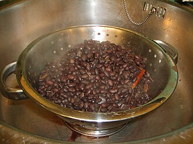
blood lily复合词
/blʌd ˈlɪli/
网球花
any of various deciduous or evergreen herbs of the genus Haemanthus; South Africa and Namibia
3.2
bottle tree复合词
格雷戈里氏猴面包树; 澳洲梧桐树; 瓶木属
an Australian tree of the genus Brachychiton
3.2
broad bean复合词
[医] 蚕豆
seed of the broad-bean plant
3.2
burning bush复合词
/ˈbɜ:nɪŋ buʃ/
燃烧灌木
(Old Testament) the bush that burned without being consumed and from which God spoke to Moses
3.2
bush bean复合词
/buʃ bi:n/
矮菜豆
a bean plant whose bushy growth needs no supports
3.2
butterfly bush复合词
= buddleia
tropical shrub having clusters of white or violet or yellow flowers
3.2
butterfly flower复合词
/ˈbʌtəflai ˈflauə/
蝶粉花
any plant of the genus Schizanthus having finely divided leaves and showy variegated flowers
3.2
cash crop复合词
[经] 经济作物, 专供销售(或即可销售)的农作物
a readily salable crop that is grown and gathered for the market (as vegetables or cotton or tobacco)
3.2
catch crop复合词
/kætʃ krɔp/
间植, 间作物; 填闲作物
a crop that grows quickly (e.g. lettuce) and can be planted between two regular crops grown in successive seasons or between two rows of crops in the same season
3.2
cherry tree复合词
[机] 樱木
any of numerous trees and shrubs producing a small fleshy round fruit with a single hard stone; many also produce a valuable hardwood
3.2
club moss复合词
[医] 石松子(孢子)
primitive evergreen moss-like plant with spores in club-shaped strobiles
3.2
coffee bean复合词
[建] 咖啡豆
a seed of the coffee tree; ground to make coffee
3.2
coffee berry复合词
[建] 咖啡豆
a seed of the coffee tree; ground to make coffee
3.2
coffee tree复合词
咖啡树
any of several small trees and shrubs native to the tropical Old World yielding coffee beans
3.2
compound leaf复合词
[医] 复叶
a leaf composed of a number of leaflets on a common stalk
3.2
cooking apple复合词
/ˈkʊkɪŋ ˈæpl/
煮熟吃的苹果
an apple used primarily in cooking for pies and applesauce etc
3.2
coral tree复合词
珊瑚树; 刺桐
any of various shrubs or shrubby trees of the genus Erythrina having trifoliate leaves and racemes of scarlet to coral red flowers and black seeds; cultivated as an ornamental
3.2
corn salad复合词
/kɔ:n ˈsæləd/
菜用结页草, 野苣（拌沙拉用）
a plant of the genus Valerianella
3.2
corn silk复合词
/kɔ:n silk/
玉米穗丝
each of the long filamentous styles that grow as a silky tuft at the tip of an ear of Indian corn
3.2
cotton grass复合词
/ˈkɔtən ɡrɑ:s/
n. 羊胡子草
any sedge of the genus Eriophorum; north temperate bog plants with tufted spikes
3.2
cotton plant复合词
/ˈkɔtən plɑ:nt/
n. 棉树，棉株; 草棉
erect bushy mallow plant or small tree bearing bolls containing seeds with many long hairy fibers
3.2
cover crop复合词
/ˈkʌvə krɔp/
覆盖作物, 肥田作物, 保护作物
crop planted to prevent soil erosion and provide green manure
3.2
day lily复合词
/dei ˈlili/
n. 萱草属植物
any of numerous perennials having mounds of sumptuous broad ribbed leaves and clusters of white, blue, or lilac flowers; used as ground cover
3.2
deer grass复合词
瑞克希阿(Trichophorum caespitosum)
any of several plants of the genus Rhexia usually having pink-purple to magenta flowers; eastern North America
3.2
desert plant复合词
/ˈdezət plɑ:nt/
沙漠植物
plant adapted for life with a limited supply of water; compare hydrophyte and mesophyte
3.2
dried fruit复合词
/draid fru:t/
n. 果脯
fruit preserved by drying
3.2
eating apple复合词
/ˈi:tiŋ ˈæpl/
n. 生吃的苹果, 作为水果的苹果
an apple used primarily for eating raw without cooking
3.2
elephant ear复合词
/ˈelifənt iə/
耳形凸缘
any plant of the genus Alocasia having large showy basal leaves and boat-shaped spathe and reddish berries
3.2
entire leaf复合词
/inˈtaiə li:f/
全缘叶
a leaf having a smooth margin without notches or indentations
3.2
false fruit复合词
/fɔ:ls fru:t/
附果，假果
a fleshy fruit (apple or pear or related fruits) having seed chambers and an outer fleshy part
3.2
fan palm复合词
/fæn pɑ:m/
蒲葵，扇形棕榈
palm having palmate or fan-shaped leaves
3.2
fever tree复合词
/ˈfi:və tri:/
金鸡纳树
any of several trees having leaves or bark used to allay fever or thought to indicate regions free of fever
3.2
field corn复合词
/fi:ld kɔ:n/
非甜质玉米
corn grown primarily for animal feed or market grain
3.2
field crop复合词
/fi:ld krɔp/
大田作物
a crop (other than fruits or vegetables) that is grown for agricultural purposes
3.2
fig leaf复合词
无花果树叶, 遮羞布
a leaf from a fig tree
3.2
flower bud复合词
/ˈflauə bʌd/
花骨朵, 花蕾, 花芽
a bud from which only a flower or flowers develop
3.2
flower cluster复合词
/ˈflauə ˈklʌstə/
团伞花
an inflorescence consisting of a cluster of flowers
3.2
flower head复合词
[医] 头状花序
a shortened compact cluster of flowers so arranged that the whole gives the effect of a single flower as in clover or members of the family Compositae
3.2
fresh bean复合词
/freʃ bi:n/
嫩刀豆
beans eaten before they are ripe as opposed to dried
3.2
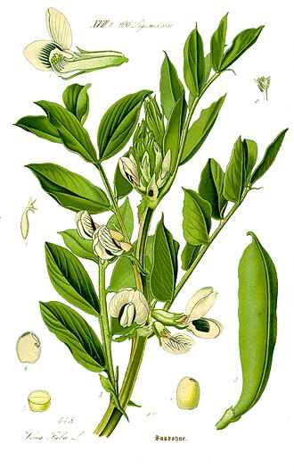
fringe tree复合词
/frindʒ tri:/
美国流苏树
any of various small decorative flowering trees or shrubs of the genus Chionanthus
3.2
garden pink复合词
/ˈɡɑ:dn piŋk/
常夏石竹
any of various flowers of plants of the genus Dianthus cultivated for their fragrant flowers
3.2
garden plant复合词
na. 栽培植物
any of a variety of plants usually grown especially in a flower or herb garden
3.2
globe flower复合词
/'gləʊbflaʊə/
n. 金梅草属植物
any of several plants of the genus Trollius having globose yellow flowers
3.2
green onion复合词
/ɡri:n ˈʌnjən/
n. 叶用葱; 大葱, 青蒜
a young onion before the bulb has enlarged; eaten in salads
3.2
green pepper复合词
/ɡri:n ˈpepə/
n. 青椒
a sweet pepper that becomes red when ripe
3.2
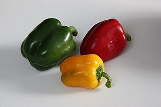
ground cherry复合词
/ɡraund ˈtʃeri:/
茶蔗子属; 醋栗; 鹅莓; 刺儿李
any of numerous cosmopolitan annual or perennial herbs of the genus Physalis bearing edible fleshy berries enclosed in a bladderlike husk; some cultivated for their flowers
3.2
gum plant复合词
/ɡʌm plɑ:nt/
[医]胶草
any of various western American plants of the genus Grindelia having resinous leaves and stems formerly used medicinally; often poisonous to livestock
3.2
gum tree复合词
/ɡʌm tri:/
n. 产树胶的树
any of various trees of the genera Eucalyptus or Liquidambar or Nyssa that are sources of gum
3.2
heart cherry复合词
/hɑ:t ˈtʃeri:/
欧洲甜樱桃，西班牙樱桃
any of several cultivated sweet cherries having sweet juicy heart-shaped fruits
3.2
home fries复合词
[电影]爱情向前冲
sliced pieces of potato fried in a pan until brown and crisp
3.2
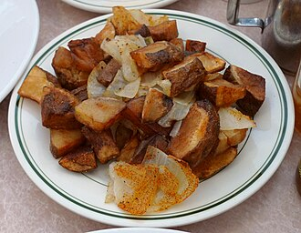
honey plant复合词
/ˈhʌni plɑ:nt/
蜜源植物
a plant that furnishes nectar suitable for making honey
3.2
iron tree复合词
/ˈaiən tri:/
铁木
a small slow-growing deciduous tree of northern Iran having a low domed shape
3.2
jacket potato复合词
/ˈdʒækit pəˈteitəu/
n. 带皮烤的马铃薯
a baked potato served with the jacket on
3.2
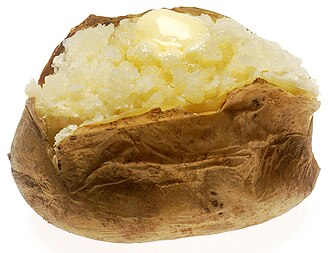
key fruit复合词
/ki: fru:t/
n. （枫树等的）翅果
a winged often one-seed indehiscent fruit as of the ash or elm or maple
3.2
lady palm复合词
/ˈleidi pɑ:m/
棕竹
any of several small palms of the genus Rhapis; cultivated as houseplants
3.2
leaf blade复合词
/li:f bleid/
叶片
especially a leaf of grass or the broad portion of a leaf as distinct from the petiole
3.2
leaf bud复合词
/li:f bʌd/
n. 叶芽, 嫩叶
a bud from which leaves (but not flowers) develop
3.2
linear leaf复合词
/ˈliniə li:f/
长叶片; 条形
a long slender leaf
3.2
love grass复合词
[植] 画眉草
any of various grasses of the genus Eragrostis; specially useful for forage and for the prevention of erosion
3.2
marsh plant复合词
/mɑ:ʃ plɑ:nt/
沼泽植物
a semiaquatic plant that grows in soft wet land; most are monocots: sedge, sphagnum, grasses, cattails, etc; possibly heath
3.2
mixed bud复合词
/mɪkst bʌd/
混合芽
a bud yielding both leaves and flowers
3.2
monkey bread复合词
/ˈmʌŋki bred/
n. 猴面包树，猴面包的果实
African gourd-like fruit with edible pulp
3.2
mountain ash复合词
n. 花楸树
any of various trees of the genus Sorbus
3.2
mountain mint复合词
/ˈmauntin mint/
[医]山薄荷
any of a number of perennial herbs of the genus Pycnanthemum; eastern North America and California
3.2
multiple fruit复合词
/ˈmʌltipl fru:t/
复果，聚花果
fruit consisting of many individual small fruits or drupes derived from separate ovaries within a common receptacle: e.g. blackberry; raspberry; pineapple
3.2
navy bean复合词
/ˈneivi bi:n/
n. 菜豆
white-seeded bean; usually dried
3.2
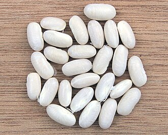
nut tree复合词
/nʌt tri:/
n. 坚果树（尤指榛树）
tree bearing edible nuts
3.2
oak apple复合词
/əuk ˈæpl/
n. 栎五倍子
oak gall caused by larvae of a cynipid wasp
3.2
oak tree复合词
/əuk tri:/
橡树; 柞树
a deciduous tree of the genus Quercus; has acorns and lobed leaves
3.2
oil nut复合词
/ɔil nʌt/
油用坚果; 油质坚果
oily drupaceous fruit of rabbitwood
3.2
oil palm复合词
/ɔil pɑ:m/
油椰子
pinnate-leaved palms of the genus Elaeis having dense clusters of crowded flowers and bright red fruit and yielding high quality palm oils
3.2
olive tree复合词
/ˈɔliv tri:/
油橄榄树
a tree of the genus Olea cultivated for its fruit
3.2
palm nut复合词
[植物学]棕榈坚果
seed of any oil palm
3.2
palm tree复合词
/pɑ:m tri:/
n. 棕榈树
any plant of the family Palmae having an unbranched trunk crowned by large pinnate or palmate leaves
3.2
panic grass复合词
/ˈpænik ɡrɑ:s/
稗
any grass of the genus Panicum; grown for grain and fodder
3.2
passion fruit复合词
/ˈpæʃən fru:t/
n. 西番莲果
egg-shaped tropical fruit of certain passionflower vines; used for sherbets and confectionery and drinks
3.2
pine tree复合词
/pain tri:/
n. 松树
a coniferous tree
3.2
plane tree复合词
[计] 平面树, 有序树
any of several trees of the genus Platanus having thin pale bark that scales off in small plates and lobed leaves and ball-shaped heads of fruits
3.2
plant life复合词
na. 植物
(botany) a living organism lacking the power of locomotion
3.2
plant organ复合词
un. 植物器官
a functional and structural unit of a plant or fungus
3.2
plant structure复合词
[化] 工厂建筑
any part of a plant or fungus
3.2
poison bush复合词
/ˈpɔizən buʃ/
含毒汁的紫龙骨豆或属相近的齿荚豆属的豆科植物，沙漠苦槛兰，光叶山黄麻
any of various Australian evergreen shrubs of the genus Gastrolobium having whorled compound leaves poisonous to livestock and showy yellow to deep reddish-orange flowers followed by two-seeded pods
3.2
pot plant复合词
/pɔt plɑ:nt/
n. 盆栽植物
a plant suitable for growing in a flowerpot (especially indoors)
3.2
rabbit food复合词
/ˈræbit fu:d/
n. 绿色蔬菜，生蔬菜
an uncooked vegetable
3.2
ray flower复合词
[医] 舌状花
small flower with a flat strap-shaped corolla usually occupying the peripheral rings of a composite flower
3.2
red oak复合词
/red əuk/
红橡木
any of numerous American oaks having 4 stamens in each floret, acorns requiring two years to mature and leaf veins usually extending beyond the leaf margin to form points or bristles
3.2
rock brake复合词
[植物]鬯珠蕨（Gryptogramma acrostichoides）
any of several small lithophytic ferns of tropical and warm temperate regions
3.2
rock plant复合词
/rɔk plɑ:nt/
n. 岩生植物，石生植物
plant that grows on or among rocks or is suitable for a rock garden
3.2
rock rose复合词
/rɔk rəuz/
沙漠座莲
any of numerous varieties of helianthemums having small rose-like yellow or white or reddish flowers
3.2
root cap复合词
[医] 根盖
thimble-shaped mass of cells covering and protecting the growing tip of a root
3.2
root crop复合词
/ru:t krɔp/
n. 块根农作物
crop grown for its enlarged roots: e.g. beets; potatoes; turnips
3.2
root hair复合词
[医] 根毛
thin hairlike outgrowth of an epidermal cell just behind the tip; absorbs nutrients from the soil
3.2
root vegetable复合词
/ru:t ˈvedʒitəbl/
（马铃薯、胡萝卜等的）根用蔬菜; 根菜类蔬菜
any of various fleshy edible underground roots or tubers
3.2
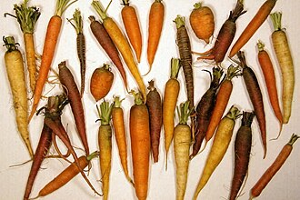
rose hip复合词
/rəuz hip/
n. 野玫瑰果
the fruit of a rose plant
3.2
scale leaf复合词
/skeil li:f/
鳞叶
a specialized leaf or bract that protects a bud or catkin
3.2
screw pine复合词
/skru: pain/
n. 露兜树属植物（产于东南亚）
any of various Old World tropical palmlike trees having huge prop roots and edible conelike fruits and leaves like pineapple leaves
3.2
seed coat复合词
/si:d kəut/
种皮
protective outer layer of seeds of flowering plants
3.2
seed leaf复合词
/si:d li:f/
子叶
embryonic leaf in seed-bearing plants
3.2
seed plant复合词
种子植物
plant that reproduces by means of seeds not spores
3.2
shade tree复合词
/ʃeid tri:/
n. 能遮荫的树; 行道树
a tree planted or valued chiefly for its shade from sunlight
3.2
shell bean复合词
壳豆（指食用前去荚的豆类）
a bean plant grown primarily for its edible seed rather than its pod
3.2
silk oak复合词
= silky oak
any of several Australian timber trees having usually fernlike foliage and mottled wood used in cabinetry and veneering
3.2
silver bell复合词
银铃; 银钟花木
any of various deciduous trees of the genus Halesia having white bell-shaped flowers
3.2
simple fruit复合词
/ˈsimpl fru:t/
单果
an indehiscent fruit derived from a single ovary having one or many seeds within a fleshy wall or pericarp: e.g. grape; tomato; cranberry
3.2
simple leaf复合词
/ˈsimpl li:f/
单叶
a leaf that is not divided into parts
3.2
smoke tree复合词
/sməuk tri:/
黄栌
any of several shrubs or shrubby trees of the genus Cotinus
3.2
soft wheat复合词
/sɔft hwi:t/
软质小麦; 碎质小麦
wheat with soft starch kernels used in pastry and breakfast cereals
3.2
spring onion复合词
/spriŋ ˈʌnjən/
n. 生吃的小洋葱, 葱
a young onion before the bulb has enlarged; eaten in salads
3.2
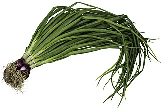
staff tree复合词
n. 【植】南蛇藤属 植物
any small tree or twining shrub of the genus Celastrus
3.2
star fruit复合词
/stɑ: fru:t/
杨桃
deeply ridged yellow-brown tropical fruit; used raw as a vegetable or in salad or when fully ripe as a dessert
3.2
stone fruit复合词
核果
fleshy indehiscent fruit with a single seed: e.g. almond; peach; plum; cherry; elderberry; olive; jujube
3.2
string bean复合词
/striŋ bi:n/
n. 青豆, 菜豆
green beans with strings that must be removed
3.2
sugar apple复合词
/ˈʃuɡə ˈæpl/
番荔枝
sweet pulpy tropical fruit with thick scaly rind and shiny black seeds
3.2
swamp plant复合词
/swɔmp plɑ:nt/
沼泽植物
a semiaquatic plant that grows in soft wet land; most are monocots: sedge, sphagnum, grasses, cattails, etc; possibly heath
3.2
sword grass复合词
/sɔ:d ɡrɑ:s/
n. 剑状（或齿状）叶草; 菖兰
any of various grasses or sedges having sword-shaped leaves with sharp edges
3.2
sword lily复合词
/sɔ:d ˈlili/
n. 剑兰
any of numerous plants of the genus Gladiolus native chiefly to tropical and South Africa having sword-shaped leaves and one-sided spikes of brightly colored funnel-shaped flowers; widely cultivated
3.2
timber tree复合词
/ˈtimbə tri:/
成材木
any tree that is valued as a source of lumber or timber
3.2
tobacco plant复合词
/təˈbækəu plɑ:nt/
烟叶
aromatic annual or perennial herbs and shrubs
3.2
tree tomato复合词
= tamarillo
South American arborescent shrub having pale pink blossoms followed by egg-shaped reddish-brown edible fruit somewhat resembling a tomato in flavor
3.2
water lemon复合词
/ˈwɔ:tə ˈlemən/
樟叶西番莲
the edible yellow fruit of the Jamaica honeysuckle
3.2
water lily复合词
睡莲
an aquatic plant of the family Nymphaeaceae
3.2
water plant复合词
[化] 水厂
a plant that grows partly or wholly in water whether rooted in the mud, as a lotus, or floating without anchorage, as the water hyacinth
3.2
white bean复合词
/hwait bi:n/
澳洲臭椿
white-seeded bean; usually dried
3.2
white oak复合词
/hwait əuk/
n. 白栎, 白栎木
any of numerous Old World and American oaks having 6 to 8 stamens in each floret, acorns that mature in one year and leaf veins that never extend beyond the margin of the leaf
3.2
white pine复合词
/hwait pain/
n. 美国五针松; 雪松
any of several five-needled pines with white wood and smooth usually light grey bark when young; especially the eastern white pine
3.2
wild apple复合词
/waild ˈæpl/
野苹果
any of numerous wild apple trees usually with small acidic fruit
3.2
wild cherry复合词
[化] 野樱皮；[医] [黑]野樱[树]
the fruit of the wild cherry tree
3.2
wild flower复合词
野花
wild or uncultivated flowering plant
3.2
wild ginger复合词
/waild ˈdʒindʒə/
杜衡
low-growing perennial herb with pungent gingery leaves and rhizomes
3.2
wild onion复合词
/waild ˈʌnjən/
鸭蒜
any of various plants of the genus Allium with edible bulbs found growing wild
3.2
wing nut复合词
[机] 翼形螺帽
any tree of the genus Pterocarya; fruit is a small winged nutlet; Caucasus to southeastern Asia
3.2
wood lily复合词
[植物学]飞鸟百合(Lilium philadelphicum)
any liliaceous plant of the genus Trillium having a whorl of three leaves at the top of the stem with a single three-petaled flower
3.2
yellow bean复合词
/ˈjeləu bi:n/
黄豆
snap beans with yellow pods
3.2
yellow berry复合词
/ˈjeləu ˈberi:/
桑悬钩子属
fruit of various buckthorns yielding dyes or pigments
3.2
shrub
/ʃrʌb/
n. 矮树, 灌木, 果汁甜酒
a low woody perennial plant usually having several major stems
3.19
swan orchid复合词
/swɔn ˈɔ:kɪd/
天鹅兰
any of several orchids of the genus Cycnoches having slender arching columns of flowers suggesting the neck of a swan
3.19
everlasting pea复合词
[医]林生山黧豆
any of several perennial vines of the genus Lathyrus
3.18
holly fern复合词
/ˈhɔli: fɜ:n/
刺贯众；矛状耳蕨；冬青蕨
any of various ferns of the genus Polystichum having fronds with texture and gloss like holly
3.18
melon vine复合词
/ˈmelən vaɪn/
瓜藤；瓜蔓
any of various fruit of cucurbitaceous vines including: muskmelons; watermelons; cantaloupes; cucumbers
3.18
tulip
/'tju:lip/
n. 郁金香
any of numerous perennial bulbous herbs having linear or broadly lanceolate leaves and usually a single showy flower
3.18
bartlett pear复合词
n. 巴氏梨
juicy yellow pear
3.17
climber
/'klaimә/
n. 登山者
a vine or climbing plant that readily grows up a support or over other plants
3.17
cranberry
/'krænbәri/
n. 越橘
any of numerous shrubs of genus Vaccinium bearing cranberries
3.17
germ tube复合词
[医] 发芽管
(botany) a slender tubular outgrowth from a spore in germination
3.17
lyme grass复合词
披碱草
a grass of the genus Elymus
3.17
avocado pear复合词
/ˌævəˈkɑ:dəʊ pɛə/
n. 鳄梨, 鳄梨树
a pear-shaped tropical fruit with green or blackish skin and rich yellowish pulp enclosing a single large seed
3.16
brussels sprouts复合词
n. 球芽甘蓝( brussels sprout的名词复数 ); [农]抱子甘蓝
the small edible cabbage-like buds growing along a stalk of the brussels sprout plant
3.16
custard apple复合词
/ˈkʌstəd ˈæpl/
南美洲番荔枝
any of several tropical American trees bearing fruit with soft edible pulp
3.16
plume grass复合词
/plu:m ɡrɑ:s/
蔗茅
a reedlike grass of the genus Erianthus having large plumes
3.16
incense cedar复合词
/ˈinsens ˈsi:də/
翠柏
any of several attractive trees of southwestern South America and New Zealand and New Caledonia having glossy evergreen leaves and scented wood
3.15
mulberry
/'mʌlbәri/
n. 桑树, 桑椹, 深紫红色
any of several trees of the genus Morus having edible fruit that resembles the blackberry
3.15
root climber复合词
/ru:t ˈklaɪmə/
根攀（缘）植物
a plant that climbs by its adventitious roots e.g. ivy
3.15
iceberg lettuce复合词
/ˈaɪsˌbɜ:g ˈletis/
n. 卷心莴苣
lettuce with crisp tightly packed light-green leaves in a firm head
3.14
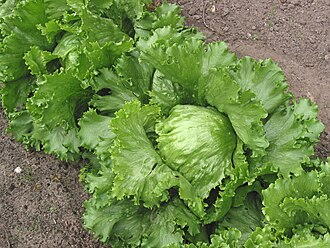
mulberry tree复合词
un. 桑属
any of several trees of the genus Morus having edible fruit that resembles the blackberry
3.14
chipotle
/ʃɪpɒtlə/
n. 干红辣椒, 烟味辣椒, 墨西哥风味快速便餐
a ripe jalapeno that has been dried for use in cooking
3.13
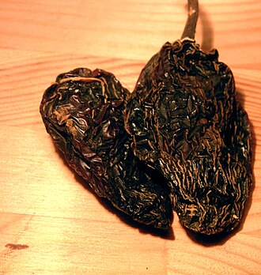
castor bean复合词
[医] 蓖麻子
the toxic seed of the castor-oil plant; source of castor oil
3.12
cottage tulip复合词
[植物]农舍郁金香
any of several long-stemmed tulips that flower in May; have egg-shaped variously colored flowers
3.12
bladder fern复合词
/ˈblædə fɜ:n/
气囊蕨
any fern of the genus Cystopteris characterized by a hooded indusium or bladderlike membrane covering the sori
3.11
lilac
/'lailәk/
n. 丁香, 丁香花, 淡紫色
any of various plants of the genus Syringa having large panicles of usually fragrant flowers
3.11
slime mould复合词
/slaɪm məuld/
粘菌
a naked mass of protoplasm having characteristics of both plants and animals; sometimes classified as protoctists
3.11
sprout
/spraut/
n. 芽, 萌芽
any new growth of a plant such as a new branch or a bud
3.11
haw
/hɒ:/
n. 山楂, 吆喝牲畜左转, 呃, 瞬膜
a spring-flowering shrub or small tree of the genus Crataegus
3.1
alligator pear复合词
/ˈælɪˌgeɪtə pɛə/
鳄梨
a pear-shaped tropical fruit with green or blackish skin and rich yellowish pulp enclosing a single large seed
3.09
angelica
/æn'dʒelikә/
n. 当归属植物
any of various tall and stout herbs of the genus Angelica having pinnately compound leaves and small white or greenish flowers in compound umbels
3.09
green soybean复合词
/ɡri:n ˈsɔɪˌbi:n/
毛豆
seeds shelled and cooked as lima beans
3.09
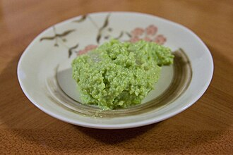
juniper berry复合词
[化] 刺柏果；[医] 杜松[实]
berrylike fruit of a plant of the genus Juniperus especially the berrylike cone of the common juniper
3.09
moth orchid复合词
/mɔθ ˈɔ:kɪd/
蝴蝶兰
any of various orchids of the genus Phalaenopsis having often drooping glossy broad obovate or oval leaves usually dark green flushed purple or mottled grey and silver
3.09
placenta
/plә'sentә/
n. 胎盘, 胎座
that part of the ovary of a flowering plant where the ovules form
3.09
spindle tree复合词
[医] 美卫矛
any shrubby trees or woody vines of the genus Euonymus having showy usually reddish berries
3.09
acorn
/'eikɒ:n/
n. 橡树果实
fruit of the oak tree: a smooth thin-walled nut in a woody cup-shaped base
3.08
acorn cup复合词
/ˈeɪˌkɔ:n kʌp/
n. 橡实之外壳
cup-shaped structure of hardened bracts at the base of an acorn
3.08
stub
/stʌb/
n. 断肢, 烟蒂, 树桩, 残余, 存根
a short piece remaining on a trunk or stem where a branch is lost
3.08
hickory nut复合词
/ˈhikəri nʌt/
山核桃属
small hard-shelled nut of North American hickory trees especially the shagbark hickories
3.07
thyme
/taim/
n. 百里香
any of various mints of the genus Thymus
3.07
aloe
/'ælәu/
n. 芦荟, 芦荟叶汁
succulent plants having rosettes of leaves usually with fiber like hemp and spikes of showy flowers; found chiefly in Africa
3.06
bean sprout复合词
/bi:n spraut/
n. 豆芽
any of various sprouted beans: especially mung beans or lentils or edible soybeans
3.06
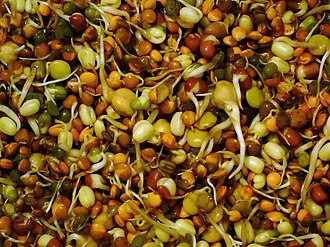
pinto bean复合词
/ˈpɪntəʊ bi:n/
花豆
mottled or spotted bean of southwestern United States; usually dried
3.06
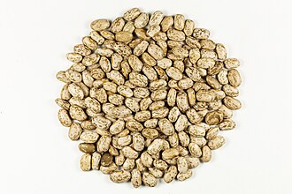
truffle
/'trʌfl/
n. 块菌
any of various highly prized edible subterranean fungi of the genus Tuber; grow naturally in southwestern Europe
3.06
azalea
/ә'zeiljә/
n. 杜鹃花
any of numerous ornamental shrubs grown for their showy flowers of various colors
3.05
false truffle复合词
/fɔ:ls ˈtrʌfl/
腹菌
any of various fungi of the family Rhizopogonaceae having subterranean fruiting bodies similar to the truffle
3.05
cob
/kɒb/
n. 圆块
nut of any of several trees of the genus Corylus
3.04
petal
/'petәl/
n. 花瓣
part of the perianth that is usually brightly colored
3.04
sugar beet复合词
n. 糖萝卜, 甜菜；[经] 甜菜
form of the common beet having a sweet white root from which sugar is obtained
3.04
yam
/jæm/
n. 山药, 薯蓣
edible tuber of any of several yams
3.04
flowering shrub复合词
/ˈflaʊərɪŋ ʃrʌb/
观花灌水
shrub noted primarily for its flowers
3.03
twig
/twig/
n. 小枝, 细枝
a small branch or division of a branch (especially a terminal division); usually applied to branches of the current or preceding year
3.03
flower petal复合词
/ˈflauə ˈpetl/
n. 花瓣
part of the perianth that is usually brightly colored
3.02
hedgehog cactus复合词
/ˈhedʒˌhɔ:g ˈkæktəs/
[植物]刺球属 (Echinocereus) 仙人掌
cactus of the genus Echinocactus having stout sharp spines
3.02
acacia
/ә'keiʃә/
n. 洋槐, 刺槐, 阿拉伯树胶
any of various spiny trees or shrubs of the genus Acacia
3.01
clover fern复合词
/ˈkləʊvə fɜ:n/
田字草；蘋
any of several water ferns of the genus Marsilea having four leaflets
3.01
eggplant
/'egplɑ:nt/
n. 茄子
egg-shaped vegetable having a shiny skin typically dark purple but occasionally white or yellow
3.01
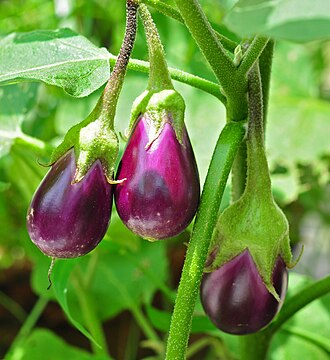
raisin
/'reizn/
n. 葡萄干
dried grape
3.01
deciduous plant复合词
/dɪˈsɪdʒu:əs plɑ:nt/
落叶植物
a plant having foliage that is shed annually at the end of the growing season
3.0
prickly ash复合词
/ˈprɪkli: æʃ/
美洲花椒
any of a number of trees or shrubs of the genus Zanthoxylum having spiny branches
3.0
savory兼类词
/'seivәri/
n. 开胃菜
any of several aromatic herbs or subshrubs of the genus Satureja having spikes of flowers attractive to bees
3.0
sow thistle复合词
/səu ˈθɪsəl/
n. 苣苦菜
any of several Old World coarse prickly-leaved shrubs and subshrubs having milky juice and yellow flowers; widely naturalized; often noxious weeds in cultivated soil
3.0
spore
/spɒ:/
n. 孢子
a small usually single-celled asexual reproductive body produced by many nonflowering plants and fungi and some bacteria and protozoans and that are capable of developing into a new individual without sexual fusion
3.0
spore case复合词
/spɔ: keis/
孢子囊
organ containing or producing spores
3.0
cumin seed复合词
/ˈkʌmin si:d/
枯茗籽
aromatic seeds of the cumin herb of the carrot family
2.99
locust tree复合词
/ˈləʊkəst tri:/
刺槐，洋槐; 槐树
any of various hardwood trees of the family Leguminosae
2.99
apricot
/'eiprikɒt/
n. 杏子, 杏树, 杏黄色
Asian tree having clusters of usually white blossoms and edible fruit resembling the peach
2.98
millet
/'milit/
n. 稷, 粟, 黍
any of various small-grained annual cereal and forage grasses of the genera Panicum, Echinochloa, Setaria, Sorghum, and Eleusine
2.98
sieve tube复合词
/siv tju:b/
筛管
tube formed by cells joined end-to-end through which nutrients flow in flowering plants and brown algae
2.98
acorn squash复合词
橡果形冬瓜；小青南瓜
squash plant bearing small acorn-shaped fruits having yellow flesh and dark green or yellow rind with longitudinal ridges
2.97
beech fern复合词
六角翅金星蕨; 金星蕨属
any fern of the genus Phegopteris having deeply cut triangular fronds
2.97
rhubarb
/'ru:bɑ:b/
n. 大黄, 大黄根
long pinkish sour leafstalks usually eaten cooked and sweetened
2.97
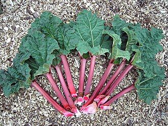
deciduous holly复合词
=black alder
a holly tree
2.96
fennel
/'fenәl/
n. 茴香
any of several aromatic herbs having edible seeds and leaves and stems
2.96
locust bean复合词
/ˈləʊkəst bi:n/
槐豆
long pod containing small beans and sweetish edible pulp; used as animal feed and source of a chocolate substitute
2.96
prune
/pru:n/
n. 洋李, 李子干, 深紫红色, 傻瓜
dried plum
2.96
savoy cabbage复合词
/səˈvɔi ˈkæbidʒ/
皱叶甘蓝
cabbage plant with a compact head of crinkled leaves
2.96
zucchini
/zu:'ki:ni/
n. 绿皮密生西葫芦
marrow squash plant whose fruit are eaten when small
2.96
muscat
/'mʌskәt/
n. 马斯喀特（阿曼首都）
any of several cultivated grapevines that produce sweet white grapes
2.95
resting spore复合词
[医] 休眠孢子
a spore of certain algae or fungi that lies dormant; may germinate after a prolonged period
2.95
tiller
/'tilә/
n. 耕种者, 分蘖
a shoot that sprouts from the base of a grass
2.95
creeper
/'kri:pә/
n. 爬行者
any plant (as ivy or periwinkle) that grows by creeping
2.94
ovary
/'әuvәri/
n. 卵巢, 子房, 果核
the organ that bears the ovules of a flower
2.94
senna
/'senә/
n. 山扁豆, 番泻叶, 轻泻剂
any of various plants of the genus Senna having pinnately compound leaves and showy usually yellow flowers; many are used medicinally
2.94
tangerine
/.tændʒә'ri:n/
n. 柑橘
a variety of mandarin orange
2.94
taro
/'tɑ:rәu/
n. 芋头
edible starchy tuberous root of taro plants
2.94
windfall
/'windfɒ:l/
n. 被风吹落的果子, 横财
fruit that has fallen from the tree
2.94
prickly poppy复合词
【植物】蓟罂粟(Argemone mexicana)[亦作 Mexican poppy]
any plant of the genus Argemone having large white or yellow flowers and prickly leaves and stems and pods; chiefly of tropical America
2.92
spore sac复合词
/spɔ: sæk/
孢子囊
organ containing or producing spores
2.92
clove
/klәuv/
n. 丁香
aromatic flower bud of a clove tree; yields a spice
2.91
columbine兼类词
/'kɒlәmbain/
n. 耧斗菜
a plant of the genus Aquilegia having irregular showy spurred flowers; north temperate regions especially mountains
2.91
primrose
/'primrәuz/
n. 报春花, 欧洲樱草, 淡黄色
any of numerous short-stemmed plants of the genus Primula having tufted basal leaves and showy flowers clustered in umbels or heads
2.91
dandelion
/'dændilaiәn/
n. 药蒲公英
any of several herbs of the genus Taraxacum having long tap roots and deeply notched leaves and bright yellow flowers followed by fluffy seed balls
2.9
oat
/әut/
n. 燕麦, 燕麦田
annual grass of Europe and North Africa; grains used as food and fodder (referred to primarily in the plural: `oats')
2.9
prickly pear复合词
[医] 仙人掌
cacti having spiny flat joints and oval fruit that is edible in some species; often used as food for stock
2.9
beggar-lice复合词
/'be^әlais/
n. 紫草科各属及其种子
Eurasian and North American plants having small prickly nutlets that stick to clothing
2.89
wort
/wә:t/
n. 草, 植物, 麦芽汁
usually used in combination: `liverwort'; `milkwort'; `whorlywort'
2.88
caper
/'keipә/
n. 跳跃
any of numerous plants of the genus Capparis
2.86
lupin
/'lu:pin/
n. 羽扇豆,(美作：lupine)
any plant of the genus Lupinus; bearing erect spikes of usually purplish-blue flowers
2.86
greenery
/'gri:nәri/
n. 绿叶, 绿树, 装饰用的绿树枝或叶
green foliage
2.84
sorghum
/'sɒ:gәm/
n. 高粱, 芦黍糖浆, 甜得发腻的东西
economically important Old World tropical cereal grass
2.83
aster
/'æstә/
n. 紫苑属植物
any of various chiefly fall-blooming herbs of the genus Aster with showy daisylike flowers
2.81
pease
/pi:z/
n. 豌豆
seed of a pea plant used for food
2.8
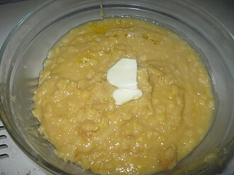
angelique
/,ændʒə'li:k/
n. 安琪莉可（女子名）；百劫红颜（电影名称）
any of various tall and stout herbs of the genus Angelica having pinnately compound leaves and small white or greenish flowers in compound umbels
2.79
bonsai
/'bɔnsai/
n. [日]盆栽
a dwarfed ornamental tree or shrub grown in a tray or shallow pot
2.79
buttercup
/'bʌtәkʌp/
n. 毛茛属植物
any of various plants of the genus Ranunculus
2.79
hazelnut
/'heizlnʌt/
n. 榛实
any of several shrubs or small trees of the genus Corylus bearing edible nuts enclosed in a leafy husk
2.78
radish
/'rædiʃ/
n. 小萝卜
pungent fleshy edible root
2.78
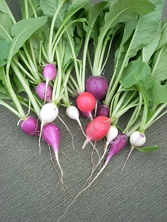
wasabi
/wəˈsɑ:bi/
n. （吃生鱼片沾用）山葵
a Japanese plant of the family Cruciferae with a thick green root
2.77
ginseng
/'dʒinseŋ/
n. 人参, 西洋参
aromatic root of ginseng plants
2.76
hibiscus
/hai'biskәs/
n. 木槿
any plant of the genus Hibiscus
2.76
rosebud
/'rәuzbʌd/
n. 蔷薇花蕾, 妙龄少女
the bud of a rose
2.76
marigold
/'mærigәuld/
n. 万寿菊, 金盏花
any of various tropical American plants of the genus Tagetes widely cultivated for their showy yellow or orange flowers
2.75
seedling
/'si:dliŋ/
n. 秧苗, 树苗
young plant or tree grown from a seed
2.75
huckleberry
/'hʌklbәri/
n. 黑果木
any of various dark-fruited as distinguished from blue-fruited blueberries
2.74
bough
/bau/
n. 大树枝
any of the larger branches of a tree
2.73
mesquite
/'meski:t/
n. 豆科灌木（产于美国西南部和墨西哥）
any of several small spiny trees or shrubs of the genus Prosopis having small flowers in axillary cylindrical spikes followed by large pods rich in sugar
2.73
stipe
/staip/
n. 柄, 叶柄, 菌柄
supporting stalk or stem-like structure especially of a pistil or fern frond or supporting a mushroom cap
2.73
campion
/'kæmpiәn/
n. 剪秋罗属植物
any plant of the genus Silene
2.72
palmetto
/pæl'metәu/
n. 美洲蒲葵
any of several low-growing palms with fan-shaped leaves
2.72
nettle
/'netl/
n. 荨麻
any of numerous plants having stinging hairs that cause skin irritation on contact (especially of the genus Urtica or family Urticaceae)
2.71
jak
n. 木菠萝
immense East Indian fruit resembling breadfruit; it contains an edible pulp and nutritious seeds that are commonly roasted
2.7
snapdragon
/'snæpdræ^әn/
n. 金鱼草
a garden plant of the genus Antirrhinum having showy white or yellow or crimson flowers resembling the face of a dragon
2.7
fuchsia
/fju:ʃә/
n. 倒挂金钟属植物
any of various tropical shrubs widely cultivated for their showy drooping purplish or reddish or white flowers; Central and South America and New Zealand and Tahiti
2.69
narcissus
/nɑ:'sisәs/
n. 水仙
bulbous plant having erect linear leaves and showy yellow or white flowers either solitary or in clusters
2.68
honeysuckle
/'hʌnisʌkl/
n. 忍冬, 杜鹃花
shrub or vine of the genus Lonicera
2.67
plantain
/'plæntin/
n. 车前草, 大蕉
any of numerous plants of the genus Plantago; mostly small roadside or dooryard weeds with elliptic leaves and small spikes of very small flowers; seeds of some used medicinally
2.67
salvia
/'sælviә/
n. 鼠尾草
any of various plants of the genus Salvia; a cosmopolitan herb
2.67
lentil
/'lentil/
n. 兵豆
round flat seed of the lentil plant used for food
2.66
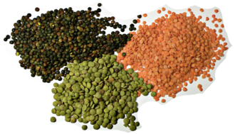
balsam
/'bɒ:lsәm/
n. 香脂, 产香脂的树, 香膏
any seed plant yielding balsam
2.65
cirrus
/'sirәs/
n. 卷须, 蔓足, 触毛
usually coiled
2.65
hoya
/hɔiә/
n. [植]球兰
any plant of the genus Hoya having fleshy leaves and usually nectariferous flowers
2.65
samara
/'sæmәrә/
n. 翅果
a winged often one-seed indehiscent fruit as of the ash or elm or maple
2.65
yucca
/'jʌkә/
n. 丝兰
any of several evergreen plants of the genus Yucca having usually tall stout stems and a terminal cluster of white flowers; warmer regions of North America
2.65
collard
/'kɔlәd/
n. [植]羽衣甘蓝
variety of kale having smooth leaves
2.64
phytoplankton
/,faitәu'plæŋktәn/
n. 浮游植物
photosynthetic or plant constituent of plankton; mainly unicellular algae
2.64
romaine
/rәu'mein/
n. 长叶莴苣
lettuce with long dark-green leaves in a loosely packed elongated head
2.64
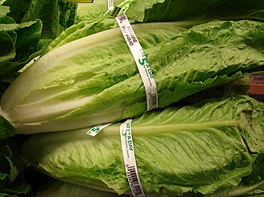
tuber
/'tju:bә/
n. 块茎, 突起, 结节
a fleshy underground stem or root serving for reproductive and food storage
2.64
okra
/'әukrә/
n. 秋葵, 秋葵荚, 羊角豆
long green edible beaked pods of the okra plant
2.63
morel
/mә'rel/
n. 茄属植物, 龙葵
any of various edible mushrooms of the genus Morchella having a brownish spongelike cap
2.62
wormwood
/'wә:mwud/
n. 苦艾, 苦恼
any of several low composite herbs of the genera Artemisia or Seriphidium
2.6
conifer
/'kɒnifә/
n. 松柏目植物, 针叶树
any gymnospermous tree or shrub bearing cones
2.59
geranium
/dʒi'reiniәm/
n. 老鹳草属植物, 天竺葵
any of numerous plants of the family Geraniaceae
2.59
legume
/'legju:m/
n. 豆类, 豆荚
an erect or climbing bean or pea plant of the family Leguminosae
2.59
mandrake
/'mændreik/
n. 曼德拉草
the root of the mandrake plant; used medicinally or as a narcotic
2.59
sorrel兼类词
/'sɒ:rәl/
n. 栗色, 栗色动物, 三岁雄鹿, 酸模, 酢浆草
any plant or flower of the genus Oxalis
2.58
valerian
/vә'liәriәn/
n. 缬草
a plant of the genus Valeriana having lobed or dissected leaves and cymose white or pink flowers
2.58
chrysanthemum
/kri'sænθәmәm/
n. 菊花
the flower of a chrysanthemum plant
2.57
peony
/'pi:әni/
n. 牡丹(花), 芍药(花)
any of numerous plants widely cultivated for their showy single or double red or pink or white flowers
2.57
wisteria
/wi'stiәriә/
n. 柴藤
any flowering vine of the genus Wisteria
2.57
anemone
/ә'nemәni/
n. 银莲花, 海葵
any woodland plant of the genus Anemone grown for its beautiful flowers and whorls of dissected leaves
2.56
bramble
/'bræmbl/
n. 荆棘, 悬钩子属植物, 黑莓
any of various rough thorny shrubs or vines
2.56
dogwood
/'dɒgwud/
n. 山茱萸科植物
a tree of shrub of the genus Cornus often having showy bracts resembling flowers
2.56
nightshade
/'naitʃeid/
n. 茄属植物
any of numerous shrubs or herbs or vines of the genus Solanum; most are poisonous though many bear edible fruit
2.55
wilding
/'waildiŋ/
n. 野生植物, 野生苹果树, 野生苹果
a wild uncultivated plant (especially a wild apple or crabapple tree)
2.55
persimmon
/pә'simәn/
n. 柿子(树)
any of several tropical trees of the genus Diospyros
2.54
tumbleweed
/'tʌmblwi:d/
n. 风滚草
any plant that breaks away from its roots in autumn and is driven by the wind as a light rolling mass
2.54
liana
/li'ɑ:nә/
n. 藤本植物
a woody climbing usually tropical plant
2.53
macadamia
/,mækә'deimiә/
n. 〈植〉澳大利亚坚果
any tree of the genus Macadamia
2.53
camellia
/kә'mi:ljә/
n. 山茶花, 山茶(树)
any of several shrubs or small evergreen trees having solitary white or pink or reddish flowers
2.52
rhododendron
/.rәudә'dendrәn/
n. 杜鹃
any shrub of the genus Rhododendron: evergreen shrubs or small shrubby trees having leathery leaves and showy clusters of campanulate (bell-shaped) flowers
2.52
cassia
/'kæsiә/
n. 肉桂
any of various trees or shrubs of the genus Cassia having pinnately compound leaves and usually yellow flowers followed by long seedpods
2.51
currant
/'kʌrәnt/
n. 葡萄干
any of several tart red or black berries used primarily for jellies and jams
2.51
chickpea
/'tʃikpi:/
n. 鹰嘴豆
the seed of the chickpea plant
2.5
mariposa
/mɑ:ri'pәusә/
n. = mariposa lily , <西> n.斗牛士在身后挥动披风的逗牛动作[字面意义：butterfly]
any of several plants of the genus Calochortus having tulip-shaped flowers with 3 sepals and 3 petals; southwestern United States and Mexico
2.5
canna
/'kænә/
n. 美人蕉属植物
any plant of the genus Canna having large sheathing leaves and clusters of large showy flowers
2.49
capsicum
/'kæpsikәm/
n. 辣椒
any of various tropical plants of the genus Capsicum bearing peppers
2.49
cress
/kres/
n. 水芹
any of various plants of the family Cruciferae with edible leaves that have a pungent taste
2.49
watercress
/'wɔ:tәkres/
n. 水田芥, 西洋菜
any of several water-loving cresses
2.49
petunia
/pi'tju:njә, -niә/
n. [植]矮牵牛花
any of numerous tropical herbs having fluted funnel-shaped flowers
2.48
sapling
/'sæpliŋ/
n. 树苗, 小树
young tree
2.48
petiole
/'petiәul/
n. 叶柄, 梗, 柄部
the slender stem that supports the blade of a leaf
2.47
beanstalk
/'bi:nstɒ:k/
n. 豆茎
stem of a bean plant
2.46
crocus
/'krәukәs/
n. 番红花属, 番红花, 磨粉
any of numerous low-growing plants of the genus Crocus having slender grasslike leaves and white or yellow or purple flowers; native chiefly to the Mediterranean region but widely cultivated
2.46
pith
/piθ/
n. 木髓, 骨髓, 要旨, 重要性, 力量, 核心, 意义, 精华
soft spongelike central cylinder of the stems of most flowering plants
2.46
rapeseed
/'reipsi:d/
n. 油菜籽
seed of rape plants; source of an edible oil
2.46
citron
/'sitrәn/
n. 香橼, 香橼果皮, 香橼色
large lemonlike fruit with thick aromatic rind; usually preserved
2.45
milkweed
/'milkwi:d/
n. 马利筋
any of numerous plants of the genus Asclepias having milky juice and pods that split open releasing seeds with downy tufts
2.45
mycelium
/mai'si:liәm/
n. 菌丝体
the vegetative part of a fungus consisting of a mass of branching threadlike hyphae
2.45
strangler
/'stræŋ^lә/
n. 扼杀者, 压制者, (英)阻气门, 阻塞门
an epiphytic vine or tree whose aerial roots extend down the trunk of a supporting tree and coalesce around it eventually strangling the tree
2.44
gardenia
/gɑ:'di:njә/
n. 栀子
any of various shrubs and small trees of the genus Gardenia having large fragrant white or yellow flowers
2.43
sprig
/sprig/
n. 小树枝, 无头钉
a small branch or division of a branch (especially a terminal division); usually applied to branches of the current or preceding year
2.43
artemisia
/,ɑ:ti'mi:ziә/
n. [植]艾属, 艾
any of various composite shrubs or herbs of the genus Artemisia having aromatic green or greyish foliage
2.41
flaxseed
/'flækssi:d/
n. 亚麻子, 亚麻仁
the seed of flax used as a source of oil
2.41
goober
/'gu:bә/
n. 落花生, 皮肤上的小疙瘩
pod of the peanut vine containing usually 2 nuts or seeds; `groundnut' and `monkey nut' are British terms
2.41
parsnip
/'pɑ:snip/
n. 欧洲防风草, 欧洲萝卜
the whitish root of cultivated parsnip
2.41
sultana
/sʌl'tɑ:nә/
n. 无核小葡萄干
pale yellow seedless grape used for raisins and wine
2.41
honeydew
/'hʌnidju:/
n. 蜜汁, 蜜露
the fruit of a variety of winter melon vine; a large smooth greenish-white melon with pale green flesh
2.4
linseed
/'linsi:d/
n. 亚麻籽
the seed of flax used as a source of oil
2.4
trillium
/'triliәm/
n. 延龄草
any liliaceous plant of the genus Trillium having a whorl of three leaves at the top of the stem with a single three-petaled flower